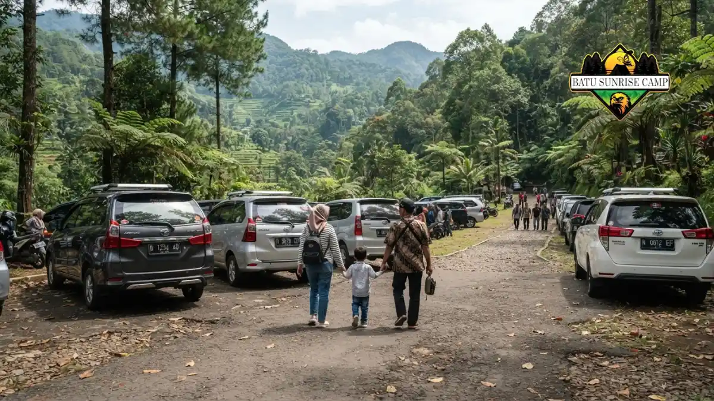

Mobil yang cocok ke Coban Rondo adalah mobil keluarga dengan rem dan pendingin mesin prima, tenaga memadai untuk tanjakan, serta dimensi yang mudah diparkir.
Jenis mobil apa yang cocok ke Coban Rondo?
Mobil yang cocok ke Coban Rondo adalah city car, hatchback, MPV, atau SUV dalam kondisi prima, dipilih menurut jumlah penumpang, bagasi, dan kenyamanan pengemudi.
City car dan hatchback mudah bermanuver di jalan desa serta parkir sempit, cocok untuk dua sampai empat orang.
MPV memberi ruang lega untuk keluarga besar, anak-anak, dan perlengkapan piknik, tetapi dimensinya menuntut kehati-hatian di tikungan sempit.
SUV atau crossover memberi posisi duduk tinggi dan ground clearance lebih besar, berguna bila jalan basah atau berlubang.
Tidak ada jenis mobil yang terbaik mutlak. Mobil berusia tua yang terawat sering lebih layak daripada mobil baru yang jarang dicek.
Kriteria utama tetap kesehatan rem, ban, sistem pendingin, dan tenaga mesin untuk menanjak dengan beban penuh.
Apakah city car kuat melewati tanjakan ke Coban Rondo?
City car umumnya kuat melewati tanjakan ke Coban Rondo bila mesinnya sehat, bebannya wajar, dan pengemudi memakai gigi rendah agar tenaga tetap tersedia.
Jalur menuju air terjun ini memang berkelok dan menanjak. Mesin berkapasitas kecil akan bekerja lebih keras, terutama bila mobil dipenuhi penumpang dan AC menyala.
Kuncinya adalah menjaga putaran mesin di rentang yang bertenaga, bukan memaksa gigi tinggi dengan putaran rendah.
Bila mobil terasa berat, matikan AC sementara di tanjakan panjang, kurangi barang bawaan, dan beri jarak aman dari kendaraan di depan agar tidak perlu berhenti di tengah tanjakan.
Awasi indikator suhu mesin. Jika jarum naik mendekati batas, menepi di tempat aman dan biarkan mesin mendingin sebelum melanjutkan.
Bagaimana cara menyetir mobil di jalan menanjak ke Coban Rondo?
Menyetir ke Coban Rondo di jalan menanjak dilakukan dengan gigi rendah, engine brake di turunan, jarak aman lebar, dan tanpa menyalip di tikungan.
Auto2000 menyarankan penggunaan gigi rendah saat menanjak agar mobil memiliki tenaga cukup. Pada mobil manual, turunkan gigi sebelum tanjakan terlalu berat.
Pada mobil matic, gunakan mode gigi rendah atau mode manual yang tersedia, misalnya posisi L atau 2, sesuai buku panduan mobil Anda.
Di turunan, jangan menahan pedal rem terus-menerus karena kampas dan minyak rem bisa terlalu panas. Gunakan gigi rendah agar mesin ikut menahan laju, lalu rem secara bertahap.
Perhatikan pejalan kaki, pesepeda, dan pengendara motor yang kerap melintas di sekitar kawasan wisata, serta patuhi rambu dan petunjuk sepanjang jalan.
Apa yang perlu dicek pada mobil sebelum berangkat?
Sebelum berangkat, cek oli mesin, air radiator, cairan pendingin, minyak rem, kondisi ban termasuk ban cadangan, lampu, wiper, dan bahan bakar agar mobil siap menanjak.
Auto2000 menekankan pemeriksaan oli, air radiator, dan cairan pendingin sebelum memulai perjalanan ke Coban Rondo.
Radiator kekurangan air adalah penyebab umum mobil kepanasan di tanjakan panjang. Tambahkan pemeriksaan minyak rem, ketebalan kampas, dan tekanan ban sesuai anjuran pabrikan.
Pastikan perlengkapan darurat tersedia: ban cadangan dalam kondisi baik, dongkrak, segitiga pengaman, dan kotak P3K sederhana.
Wiper dan lampu penting karena kabut dan hujan di dataran tinggi dapat muncul tiba-tiba. Idealnya, servis berkala dilakukan beberapa hari sebelum perjalanan, bukan pada hari keberangkatan.

Area parkir mobil di kawasan wisata Coban Rondo Pujon Malang dengan deretan kendaraan rapi di bawah pepohonan.
Berapa perkiraan biaya mobil untuk rombongan ke Coban Rondo?
Biaya mobil ke Coban Rondo mencakup tiket, parkir, bahan bakar, dan konsumsi; tiket hari libur untuk empat orang sekitar Rp160.000 dengan tarif Rp40.000 per orang.
Popbela (25 Juni 2026) melaporkan tiket masuk Rp35.000 pada hari biasa dan Rp40.000 saat hari libur.
Dengan tarif tersebut, empat orang membayar sekitar Rp140.000 pada hari biasa atau Rp160.000 pada hari libur. Angka ini dapat berubah, sehingga konfirmasi di loket tetap diperlukan.
Biaya bahan bakar bergantung jenis mobil, jarak asal, dan kondisi lalu lintas, sehingga tidak bisa dipatok satu angka.
Tarif parkir tidak ditemukan dalam sumber resmi yang dapat dirujuk, jadi siapkan dana cadangan.
Berbagi kursi dengan keluarga atau teman biasanya membuat biaya per orang lebih ringan dibanding membawa banyak motor.
Lebih baik sewa mobil atau bawa mobil sendiri ke Coban Rondo?
Bawa mobil sendiri lebih hemat bila Anda tinggal dekat Malang, sedangkan sewa mobil lebih praktis bagi wisatawan luar kota yang tidak membawa kendaraan.
Orami (April 2025) mencatat banyak wisatawan memilih menyewa mobil daripada memakai kendaraan umum untuk ke Coban Rondo.
Sewa dengan sopir cocok bagi yang kurang percaya diri di jalan menanjak, karena pengemudi lokal biasanya mengenal jalur dan titik macet.
Sebelum menyewa, periksa kondisi fisik mobil, tekanan ban, rem, dan kelengkapan dokumen. Pahami ketentuan tentang bahan bakar, jam pengembalian, batas jarak, dan tanggung jawab kerusakan.
Bandingkan beberapa penyedia, minta kesepakatan tertulis, dan hindari harga yang terlalu jauh di bawah pasaran karena bisa mencerminkan unit kurang terawat. Untuk melihat opsi lain, baca panduan kendaraan yang cocok untuk ke Coban Rondo.
Bagaimana mengatur parkir dan antrean saat ramai di Coban Rondo?
Untuk menghindari antrean parkir di Coban Rondo, berangkat pagi, hindari puncak libur panjang, dan siapkan rencana cadangan bila area parkir penuh atau jalan masuk padat.
Kawasan Coban Rondo memiliki area parkir untuk mobil dan motor, dan sumber berita menyebut fasilitas parkirnya memadai.
Namun, saat akhir pekan atau libur panjang, kepadatan kendaraan di sekitar Pujon dapat memperlambat perjalanan masuk dan keluar.
Berangkat pagi memberi peluang mendapat tempat parkir lebih mudah dan suhu yang lebih nyaman untuk anak-anak.
Tentukan titik pertemuan jika rombongan terbagi dalam beberapa mobil. Parkir sesuai arahan petugas, kunci kendaraan, dan jangan meninggalkan barang berharga terlihat dari luar. Bila mobil Anda besar, tanyakan petugas tentang area parkir yang sesuai.
Kesimpulan
Mobil yang cocok ke Coban Rondo bukan soal merek, melainkan kesiapan mobil dan pengemudinya. Pastikan rem, ban, oli, dan radiator prima, lalu gunakan gigi rendah di tanjakan dan turunan.
Hitung biaya dengan tarif tiket terbaru, berangkat pagi untuk menghindari antrean, dan pertimbangkan sewa dengan sopir bila belum terbiasa dengan jalur pegunungan. Untuk perbandingan dengan pilihan motor, baca tips naik motor ke Coban Rondo.